Assignment 2
Deep Learning on Large-Scale Data and Specialized Tasks
Deep Learning on Large-Scale Data for Specialized Computer Vision or Language Tasks
Instructor
Lê Thành Sách
Group members
Hoàng Xuân Bách · Nguyễn Việt Hùng · Lê Nguyễn Gia Phúc
Problem statement
Dataset description and EDA
Dataset description
Source, task and license
Original source and version. Food-11 was released by the Multimedia Signal Processing Group (MMSPG) at EPFL and introduced by Singla, Yuan and Ebrahimi (2016) in Food/Non-Food Image Classification and Food Categorization Using Pre-Trained GoogLeNet Model. This project uses the Kaggle mirror maintained by trolukovich;
Collection and category design. Section 4.2 of the original paper describes categories adapted from major USDA food groups. Images were mainly collected from Food-101, UEC-FOOD-100 and UEC-FOOD-256, with additional Flickr and Instagram images for Dairy product and Vegetable/Fruit. The authors included varied food items within each category and selected images whose main content belonged to that category.
Task and annotations. The task is supervised, single-label classification: given one RGB food photograph, predict one of 11 broad food categories. The prediction unit is one image. In the Kaggle distribution used here, labels come from class folders and are mapped to integer IDs 0–10. A mixed dish still receives one supplied category label. The group preserves the provided labels and split assignments. The experiments remove duplicate images before training and evaluation.
License and use. The EPFL conditions of use permit use, copying, modification and distribution of the dataset and its documentation for research purposes only and prohibit commercial distribution. This project uses Food-11 for academic coursework and research under those published conditions.
Format, counts and size
| Property | Value |
|---|---|
| Dataset version | Version 1 of the Kaggle distribution; original Food-11 release by EPFL |
| Total samples (original) | 16,643 (train 9,866; validation 3,430; evaluation/test 3,347) |
| Samples after deduplication | 15,980 (train 9,846; validation 3,364; evaluation/test 2,770) |
| Classes | 11 food categories; one integer label per image |
| Raw format | JPEG, RGB, uint8 in [0, 255] |
| Model input | float32 tensor, 3 × 256 × 256 after resize, padding and ImageNet normalization. A full batch of 128 input tensors occupies 96 MiB. |
| Size on disk | ≈ 1,133 MiB |
| License | EPFL provides the original release for research use. The report records a CC0 listing for the Kaggle mirror. |
Table 1 - Food-11 overview
Exploratory data analysis (EDA)
The EDA describes the original release before duplicate removal. The preliminary audit scans file integrity, native dimensions and metadata across all three splits. The report computes pixel statistics on original training images after resizing the longer side to 256 px, with padding excluded. Table 7 compares those statistics with the ImageNet constants used for normalization.
Data integrity
All 16,643 files decode as RGB JPEGs; no file is empty, unreadable or inconsistent with its extension. The same 11 class folders appear in all three official splits.
Class distribution before deduplication

On the original splits, always predicting Dessert gives 14.58% validation accuracy and 2.31% validation Macro-F1. It gives 14.94% accuracy on the original evaluation split. Macro-F1 gives each class equal weight.
Class Distribution across splits before deduplication
| Training | Validation | Evaluation | ||||||
|---|---|---|---|---|---|---|---|---|
| Idx | Class | Images | % | Images | % | Images | % | Total |
| 0 | Bread | 994 | 10.08 | 362 | 10.55 | 368 | 10.99 | 1,724 |
| 1 | Dairy product | 429 | 4.35 | 144 | 4.20 | 148 | 4.42 | 721 |
| 2 | Dessert | 1,500 | 15.20 | 500 | 14.58 | 500 | 14.94 | 2,500 |
| 3 | Egg | 986 | 9.99 | 327 | 9.53 | 335 | 10.01 | 1,648 |
| 4 | Fried food | 848 | 8.60 | 326 | 9.50 | 287 | 8.57 | 1,461 |
| 5 | Meat | 1,325 | 13.43 | 449 | 13.09 | 432 | 12.91 | 2,206 |
| 6 | Noodles/Pasta | 440 | 4.46 | 147 | 4.29 | 147 | 4.39 | 734 |
| 7 | Rice | 280 | 2.84 | 96 | 2.80 | 96 | 2.87 | 472 |
| 8 | Seafood | 855 | 8.67 | 347 | 10.12 | 303 | 9.05 | 1,505 |
| 9 | Soup | 1,500 | 15.20 | 500 | 14.58 | 500 | 14.94 | 2,500 |
| 10 | Vegetable/Fruit | 709 | 7.19 | 232 | 6.76 | 231 | 6.90 | 1,172 |
| Total | 9,866 | 100 | 3,430 | 100 | 3,347 | 100 | 16,643 | |
Table 2: Official sample counts by class and split
Input size
| Rank | Resolution (pixels) | Images | Share (%) |
|---|---|---|---|
| 1 | 512 × 512 | 5,551 | 56.26 |
| 2 | 512 × 384 | 1,355 | 13.73 |
| 3 | 384 × 512 | 519 | 5.26 |
| 4 | 382 × 512 | 320 | 3.24 |
| 5 | 512 × 382 | 216 | 2.19 |
| 6 | 512 × 341 | 142 | 1.44 |
| 7 | 1024 × 768 | 108 | 1.09 |
| 8 | 512 × 306 | 107 | 1.08 |
| 9 | 512 × 289 | 81 | 0.82 |
| 10 | 511 × 512 | 60 | 0.61 |
| Other | 1,407 | 14.26 | |
| Total | 9,866 | 100.00 |
Table 3: Ten most common resolutions in the original training split.
| Dimensions above 512 pixels | Images | Share (%) |
|---|---|---|
| Neither dimension | 9,319 | 94.46 |
| Exactly one dimension | 120 | 1.22 |
| Both dimensions | 427 | 4.33 |
| Total | 9,866 | 100.00 |
Table 4: Original training images by number of dimensions above 512 pixels. Shares are rounded independently.
We chose a common input size of 256 × 256 to balance spatial detail and compute cost across models and repeated runs. For the dominant 512 × 512 group, this halves each dimension and reduces the input pixel count from 262,144 to 65,536 (75% fewer pixels). The preprocessing rule was fixed before training using the original training images and applied to all partitions.
Pixel intensity
Table 7 reports descriptive training-set RGB statistics, computed after a 256 px resize with padding excluded, and the fixed ImageNet constants used for normalization. Food-11 is warmer and has a wider pixel spread than the ImageNet reference. Figure 4 shows the channel distributions.
| Channel | Train mean | Train std | ImageNet mean | ImageNet std |
|---|---|---|---|---|
| R | 0.5586 | 0.2722 | 0.485 | 0.229 |
| G | 0.4520 | 0.2755 | 0.456 | 0.224 |
| B | 0.3434 | 0.2821 | 0.406 | 0.225 |
Table 7 - Training-set RGB statistics and ImageNet reference

Duplicates and split leakage
Exact duplicates have identical file bytes. Matching 64-bit dHashes flag possible near-duplicates in the preliminary audit. Table 5a summarizes pairwise overlap, and Table 5b shows the exact-copy overlap alongside the test counts after the final MD5 and pHash cleaning.
| Split pair | MD5 duplicate pairs | pHash candidate pairs |
|---|---|---|
| train–val | 51 | 51 |
| train–test | 249 | 46 |
| val–test | 311 | 14 |
| train–train | 5 | 69 |
| val–val | 3 | 7 |
| test–test | 5 | 9 |
| Total | 624 | 196 |
Duplicate audit within and across the official splits. MD5 counts represent exact-duplicate pairs. pHash candidates have different MD5 hashes and a Hamming distance of at most 10. Counts refer to image pairs, not unique images.


Images were treated as duplicates when they shared the same MD5 hash or as near-duplicates when their pHash Hamming distance was at most 5. Both checks used the same removal logic: an image was removed only if a matching representative had already been retained. MD5 deduplication was performed first, followed by pHash deduplication. Each stage processed duplicates within partitions before removing duplicates across partitions, with retention priority given to training, then validation, and finally evaluation. Within each partition, the first eligible image in the existing order was retained. Two additional redundant images were removed after manual inspection, while their counterparts were retained. Label consistency was also checked to distinguish repeated images from identical images assigned to different categories, All images removed during deduplication shared the same class label as their retained counterparts. The resulting class distribution is shown in Table 8.
| Idx | Class | Training | Validation | Evaluation | Total | |||
|---|---|---|---|---|---|---|---|---|
| Images | % | Images | % | Images | % | |||
| 0 | Bread | 993 | 10.09 | 362 | 10.76 | 268 | 9.68 | 1,623 |
| 1 | Dairy product | 423 | 4.30 | 141 | 4.19 | 147 | 5.31 | 711 |
| 2 | Dessert | 1,499 | 15.22 | 450 | 13.38 | 440 | 15.88 | 2,389 |
| 3 | Egg | 982 | 9.97 | 327 | 9.72 | 329 | 11.88 | 1,638 |
| 4 | Fried food | 848 | 8.61 | 326 | 9.69 | 221 | 7.98 | 1,395 |
| 5 | Meat | 1,325 | 13.46 | 449 | 13.35 | 321 | 11.59 | 2,095 |
| 6 | Noodles/Pasta | 438 | 4.45 | 147 | 4.37 | 147 | 5.31 | 732 |
| 7 | Rice | 279 | 2.83 | 88 | 2.62 | 90 | 3.25 | 457 |
| 8 | Seafood | 855 | 8.68 | 347 | 10.32 | 203 | 7.33 | 1,405 |
| 9 | Soup | 1,497 | 15.20 | 500 | 14.86 | 384 | 13.86 | 2,381 |
| 10 | Vegetable/Fruit | 707 | 7.18 | 227 | 6.75 | 220 | 7.94 | 1,154 |
| Total | 9,846 | 100 | 3,364 | 100 | 2,770 | 100 | 15,980 | |
Table 8: Class distribution after duplicate removal. Each percentage is calculated relative to the number of retained images in its split.
Sample inspection
The samples in Figure 5 show broad within-class variety, composite dishes assigned one class label, examples that appear off-topic and visually similar classes such as Noodles/Pasta/Soup and Meat/Egg/Fried food. These qualitative observations motivate hypotheses for later error analysis; their prevalence has not been quantified.

Data splitting
| Item | Protocol |
|---|---|
| Split | The predefined Food-11 training, validation, and evaluation partitions are used without random re-splitting. After deduplication, they contain 9,846, 3,364, and 2,770 images, respectively. Retained images remain in their original partitions. |
| Seeds | No split seed is used. Training seeds 42, 43, and 44 are assigned to Python, NumPy, and PyTorch CPU and CUDA random-number generators before model initialization and training. They control stochastic operations such as initialization, shuffling, augmentation, and dropout. The cleaned partitions remain fixed. |
| Stratification | No additional stratified splitting is performed. Class counts and proportions are examined separately for each partition to assess imbalance and differences in class distribution. |
| Split unit | One image file. The dataset provides no subject, restaurant, plate, or scene identifiers for grouped splitting. Image-similarity checks are used to identify duplicates within and across partitions. |
| Leakage control | MD5 exact-duplicate removal is followed by pHash near-duplicate removal using a Hamming distance of at most 5. Each stage processes duplicates within partitions before removing duplicates across partitions, with retention priority given to training, then validation, and finally evaluation. An image is removed only when a matching representative has already been retained. Two additional redundant images are removed after manual inspection. |
| Subset selection rules | All 11 classes and all 15,980 images retained after deduplication are used. No additional class exclusion or sample subsampling is applied. |
Table 9: Data-splitting protocol for the cleaned Food-11 dataset. The same retained partitions are used across all model configurations, training seeds, and augmentation conditions.
Data preprocessing
Data cleaning and annotation handling
All 16,643 original image files were successfully decoded as RGB JPEGs, with no empty or unreadable files. Exact duplicates, near-duplicates, and two manually identified redundant images were removed as described in the leakage-control protocol. Class labels are inherited from the dataset folders. Potentially ambiguous annotations are discussed as dataset limitations rather than automatically relabeled.
Resizing and padding
Each image is converted to RGB and resized using bilinear interpolation so that its longer side becomes 256 pixels while preserving its aspect ratio. The resized image is centered on a black 256 × 256 canvas, with padding divided as evenly as possible between opposite sides. This produces a uniform input size without cropping image content or distorting its proportions.
Normalization
Pixel values are converted to floating-point values on the [0, 1] scale and normalized independently for each RGB channel using the fixed ImageNet mean (0.485, 0.456, 0.406) and standard deviation (0.229, 0.224, 0.225). These constants match the normalization expected by the pretrained ResNet-18 weights. The same normalization is applied to SimpleCNN to keep input preprocessing consistent across configurations.
Data augmentation
Training images undergo random horizontal flipping with probability 0.5 after resizing and padding. No rotation or random cropping is applied. Horizontal flipping is disabled in the augmentation ablation. Validation and evaluation images use the same resizing, padding, and normalization steps without random augmentation.
Input tensor shapes
Each preprocessed image is represented as a float32 tensor of shape [3, 256, 256], corresponding to the RGB channels, height, and width. Each class label is an integer from 0 to 10.
Example batch after preprocessing
Training, validation, and evaluation use a batch size of 128. Training samples are shuffled, while validation and evaluation samples retain their order. A full batch has the shapes and data types below. The final batch may contain fewer images because incomplete batches are retained.
images: shape [128, 3, 256, 256], dtype torch.float32 labels: shape [128], dtype torch.int64

Methodology
Pipeline overview

Baseline and main methods
| # | Model / Variant | Architecture | Input representation | Loss | Metrics | Strengths & limits | Params (Total / Trainable) | Library vs. Self-implemented |
|---|---|---|---|---|---|---|---|---|
| 1 | SimpleCNN Scratch baseline |
Four Conv–BN–ReLU–MaxPool blocks with 16, 32, 64 and 128 channels. Global average pooling → dropout (0.3) → linear head (128 → 11). |
B × 3 × 256 × 256 RGB, aspect-preserving resize, black padding and ImageNet normalization. |
nn.CrossEntropyLoss, unweighted. |
Primary: test Macro-F1. Secondary: accuracy, macro-precision, macro-recall, cross-entropy, per-class metrics and compute cost. |
Compact and fast at inference. Learns features from scratch and converges more slowly. | 99,339 Trainable: 99,339 |
Custom SimpleCNN built with torch.nn layers. |
| 2 | ResNet-18 (Frozen) Linear probe |
ImageNet-1K V1 backbone. The backbone and its BatchNorm running statistics stay fixed. Global average pooling → dropout (0.3) → linear head (512 → 11). | B × 3 × 256 × 256 RGB, aspect-preserving resize, black padding and ImageNet normalization. |
nn.CrossEntropyLoss, unweighted. |
Primary: test Macro-F1. Secondary: accuracy, macro-precision, macro-recall, cross-entropy, per-class metrics and compute cost. |
Pretrained features give strong results with few trainable parameters. The full backbone still runs for each image. | 11,182,155 Trainable: 5,643 |
TorchVision ResNet-18 with a custom classification head and freeze policy. |
| 3 | ResNet-18 (Full Fine-Tuning) | Same pretrained backbone and classification head. Update both backbone and head, with a lower learning rate for the backbone. | B × 3 × 256 × 256 RGB, aspect-preserving resize, black padding and ImageNet normalization. |
nn.CrossEntropyLoss, unweighted. |
Primary: test Macro-F1. Secondary: accuracy, macro-precision, macro-recall, cross-entropy, per-class metrics and compute cost. |
Highest Macro-F1 in the comparison, with higher training time and a persistent train–validation gap. | 11,182,155 Trainable: 11,182,155 |
TorchVision ResNet-18 with a custom classification head and optimizer parameter groups. |
| Hyperparameter / Component | Specification / Value |
|---|---|
| Optimizer |
torch.optim.AdamW,
β₁ = 0.9, β₂ = 0.999, ε = 10−8,
and weight decay = 10−2
|
| Loss Function | Unweighted CrossEntropyLoss |
| Initial Learning Rate |
SimpleCNN: 10−3 for all parameters. ResNet-18 frozen: 10−3 for the classification head. ResNet-18 full: 10−4 for the backbone and 10−3 for the classification head. |
| Batching and Data Loading |
Batch size 128 for training, validation, and evaluation.
Training samples are shuffled; validation and evaluation samples
are not. Data loading uses num_workers=0.
|
| Training Duration | A fixed budget of 25 epochs for every configuration; no early stopping |
| Learning Rate Scheduler |
ReduceLROnPlateau, mode=min,
factor = 0.5, patience = 3, and minimum learning rate =
10−6 for each parameter group.
The default threshold is 10−4 with
threshold_mode=rel.
The scheduler is stepped on validation loss.
|
| Input and Normalization | RGB inputs of shape 3 × 256 × 256. Aspect-ratio-preserving bilinear resizing and centered black padding are applied. Pixel values are scaled to [0, 1] and normalized using ImageNet mean (0.485, 0.456, 0.406) and standard deviation (0.229, 0.224, 0.225). |
| Data Augmentation | Training only: random horizontal flipping with probability 0.5. No random augmentation is applied to validation or evaluation images. |
| Regularization |
SimpleCNN: Batch normalization in all four
convolutional blocks and dropout with probability 0.3 in the
classification head. ResNet-18: Backbone batch normalization and dropout with probability 0.3 in the new head. Frozen-backbone batch normalization remains in evaluation mode. |
| Weight Initialization |
SimpleCNN: Trained from scratch. ResNet-18: ImageNet-1K pretrained backbone ( IMAGENET1K_V1) with a newly initialized
11-class classification head.
|
| Checkpoint Criterion | Highest validation Macro-F1-score. Equal scores are resolved using lower validation loss. The selected checkpoint is restored before final evaluation. |
| Seeds | Training seeds 42, 43, and 44 for each configuration. The cleaned Food-11 partitions are derived from the official splits and held fixed across all runs. |
| Hardware & Environment | NVIDIA Tesla T4 GPU, Google Colab, Linux, Python 3.13.16, PyTorch 2.11.0+cu130, TorchVision 0.26.0+cu130, CUDA 13.0, NumPy 2.4.6, pandas 2.2.3, and scikit-learn 1.6.1 |
| Numerical Precision |
FP32 (torch.float32);
no mixed-precision training is used
|
| Reported Training Time | Sum of the per-epoch training and validation timings. Includes batch loading, preprocessing, training augmentation, device transfer, forward and backward passes, optimizer updates, and metric computation. Excludes dataset preparation, model initialization, checkpoint and CSV writes, printed logging, scheduler updates, and final test evaluation. |
| Hyperparameter Configuration | Hyperparameters were selected manually and held fixed across training seeds for each configuration. |
Training and Optimization Hyperparameters for SimpleCNN and ResNet-18.
2. Experimental design & controlled comparisons
The design compares the three model configurations and tests horizontal flipping as a separate ablation.
| # | Comparison Study | Reference vs. Alternative | Predeclared Hypothesis | Changed Factor(s) | Fixed Factors | Metrics & Decision Criterion |
|---|---|---|---|---|---|---|
| 1 | Model configuration | SimpleCNN vs. ResNet-18 frozen vs. ResNet-18 full | The pretrained configurations outperform the scratch baseline. Full fine-tuning improves over a frozen backbone. | Architecture, initialization, capacity and backbone update policy vary by configuration. | Cleaned splits, preprocessing, flip policy, training budget, optimizer and checkpoint rule. Within each seed the two ResNet-18 runs share pretrained weights and the initial classifier head. |
Metrics: Test Macro-F1 is the primary metric,
supported by secondary predictive metrics, computational costs,
and training and validation curves. Conclusion criteria: Compare mean test Macro-F1, variability across seeds, and computational cost. The SimpleCNN–ResNet comparison evaluates complete configurations and cannot attribute performance differences solely to pretraining, because architecture and capacity also differ. |
| 2 | Horizontal-flip ablation | With flip (p = 0.5) vs. no flip (p = 0) for each model |
Training-time horizontal flipping improves test Macro-F1. | Horizontal flipping during training. | Model, partitions, other training settings and matched seeds. |
Metrics: For each configuration and training seed,
compute the paired test Macro-F1 difference as
augmentation minus no augmentation. Report mean ± sample standard
deviation across seeds 42, 43, and 44. Conclusion criteria: A positive mean difference favors horizontal-flip augmentation, whereas a negative mean difference favors training without augmentation. The standard deviation describes variability across seeds. A mean difference that is small compared with its standard deviation is interpreted cautiously as inconclusive evidence of improvement. |
Results
The three models use the same 2,770 cleaned Food-11 test images. Results are mean ± sample standard deviation across training seeds 42, 43 and 44. Each run completes 25 epochs and restores the checkpoint with the highest validation Macro-F1, with lower validation cross-entropy breaking ties.
Results by method
Validation uses unaugmented images and the weights at the end of each epoch. In each per-class table, bold and underlined values mark the highest and lowest means in each column. In the confusion matrices, rows are true classes and columns are predicted classes. The row-normalized diagonal gives class recall. Prediction examples use each model’s selected checkpoint for seed 42. Difficult-but-correct examples have small gaps between their two highest softmax scores.
SimpleCNNTest Macro-F1 57.58 ± 0.84%
Test performance and compute cost
| Metric | Mean ± sample SD |
|---|---|
| Top-1 accuracy (%) | 60.40 ± 1.02 |
| Macro-precision (%) | 63.48 ± 2.25 |
| Macro-recall (%) | 57.23 ± 0.51 |
| Macro-F1 (%) | 57.58 ± 0.84 |
| Test cross-entropy | 1.2060 ± 0.0273 |
| Metric | Value |
|---|---|
| Total parameters | 99,339 |
| Trainable parameters | 99,339 |
| Epochs per run | 25 |
| Training time (s/run) | 2,969.5 ± 112.3 |
| Training time (s/epoch) | 118.78 ± 4.49 |
| Inference (ms/image) | 0.8478 ± 0.1258 |
Training behavior and learning curves
SimpleCNN improves gradually. Training loss is still falling late in the 25-epoch budget. The selected epochs for seeds 42, 43 and 44 are 22, 25 and 25, respectively.

Per-class metrics and confusion matrices
| Class | One-vs-rest Acc (%) | Precision (%) | Recall (%) | F1 (%) |
|---|---|---|---|---|
| Bread | 89.64 ± 2.19 | 48.92 ± 8.70 | 47.51 ± 11.44 | 46.87 ± 4.00 |
| Dairy product | 95.38 ± 0.07 | 76.47 ± 3.09 | 18.82 ± 2.75 | 30.10 ± 3.44 |
| Dessert | 83.25 ± 1.52 | 48.39 ± 3.52 | 66.67 ± 6.43 | 55.83 ± 0.99 |
| Egg | 90.29 ± 0.58 | 61.41 ± 4.42 | 50.46 ± 3.70 | 55.22 ± 1.43 |
| Fried food | 92.07 ± 1.39 | 51.22 ± 6.90 | 64.71 ± 5.56 | 56.74 ± 2.42 |
| Meat | 92.77 ± 0.33 | 74.98 ± 8.61 | 59.61 ± 15.22 | 64.87 ± 7.50 |
| Noodles/Pasta | 95.85 ± 0.85 | 62.09 ± 9.56 | 61.68 ± 3.49 | 61.44 ± 3.66 |
| Rice | 96.57 ± 0.66 | 50.42 ± 15.44 | 39.63 ± 6.70 | 43.00 ± 2.99 |
| Seafood | 94.33 ± 0.32 | 65.91 ± 10.97 | 54.52 ± 14.53 | 57.81 ± 5.87 |
| Soup | 92.80 ± 1.58 | 75.20 ± 9.87 | 74.57 ± 5.36 | 74.37 ± 2.88 |
| Vegetable/Fruit | 97.85 ± 0.30 | 83.26 ± 3.21 | 91.36 ± 0.45 | 87.10 ± 1.55 |
SimpleCNN predicts Dessert for 39.5 ± 10.3% of Dairy product images and Noodles/Pasta for 34.4 ± 7.3% of Rice images.


Qualitative examples · seed 42
In a close correct prediction, SimpleCNN ranks Egg at 21.826% and Dairy product at 21.794%. It also predicts Noodles/Pasta for a fried-rice dish.


ResNet-18 frozenTest Macro-F1 85.26 ± 0.17%
Test performance and compute cost
| Metric | Mean ± sample SD |
|---|---|
| Top-1 accuracy (%) | 84.62 ± 0.24 |
| Macro-precision (%) | 85.45 ± 0.10 |
| Macro-recall (%) | 85.23 ± 0.19 |
| Macro-F1 (%) | 85.26 ± 0.17 |
| Test cross-entropy | 0.4938 ± 0.0036 |
| Metric | Value |
|---|---|
| Total parameters | 11,182,155 |
| Trainable parameters | 5,643 |
| Epochs per run | 25 |
| Training time (s/run) | 2,970.3 ± 97.2 |
| Training time (s/epoch) | 118.81 ± 3.89 |
| Inference (ms/image) | 3.5537 ± 0.0107 |
Training behavior and learning curves
Validation Macro-F1 rises quickly and then plateaus with the backbone frozen. The selected epochs for seeds 42, 43 and 44 are 22, 25 and 22, respectively.

Per-class metrics and confusion matrices
| Class | One-vs-rest Acc (%) | Precision (%) | Recall (%) | F1 (%) |
|---|---|---|---|---|
| Bread | 95.28 ± 0.15 | 75.66 ± 2.39 | 75.75 ± 2.45 | 75.65 ± 0.24 |
| Dairy product | 97.57 ± 0.09 | 81.64 ± 2.73 | 70.07 ± 1.80 | 75.37 ± 0.41 |
| Dessert | 93.39 ± 0.06 | 80.12 ± 0.93 | 77.73 ± 2.02 | 78.89 ± 0.58 |
| Egg | 95.09 ± 0.10 | 79.90 ± 1.12 | 78.42 ± 2.19 | 79.13 ± 0.70 |
| Fried food | 97.20 ± 0.15 | 82.07 ± 2.25 | 83.11 ± 2.23 | 82.55 ± 0.75 |
| Meat | 96.79 ± 0.23 | 83.56 ± 1.90 | 90.03 ± 0.62 | 86.66 ± 0.74 |
| Noodles/Pasta | 99.70 ± 0.02 | 96.64 ± 0.01 | 97.73 ± 0.39 | 97.18 ± 0.20 |
| Rice | 99.49 ± 0.04 | 90.43 ± 0.92 | 94.44 ± 1.11 | 92.39 ± 0.55 |
| Seafood | 97.45 ± 0.13 | 82.41 ± 1.77 | 82.92 ± 0.57 | 82.66 ± 0.63 |
| Soup | 98.33 ± 0.08 | 92.90 ± 0.82 | 95.23 ± 0.66 | 94.04 ± 0.28 |
| Vegetable/Fruit | 98.95 ± 0.06 | 94.59 ± 1.47 | 92.12 ± 1.84 | 93.32 ± 0.45 |
With a frozen backbone, Rice recall rises from 39.6% to 94.4%. The share of Rice images predicted as Noodles/Pasta falls from 34.4% to 1.1%.


Qualitative examples · seed 42
Frozen ResNet-18 correctly predicts Seafood for mussels (99.568%) but predicts Fried food for a tray of bread rolls (53.549%).


ResNet-18 full fine-tuningTest Macro-F1 91.67 ± 0.39%
Test performance and compute cost
| Metric | Mean ± sample SD |
|---|---|
| Top-1 accuracy (%) | 91.37 ± 0.43 |
| Macro-precision (%) | 91.65 ± 0.37 |
| Macro-recall (%) | 91.74 ± 0.40 |
| Macro-F1 (%) | 91.67 ± 0.39 |
| Test cross-entropy | 0.3197 ± 0.0148 |
| Metric | Value |
|---|---|
| Total parameters | 11,182,155 |
| Trainable parameters | 11,182,155 |
| Epochs per run | 25 |
| Training time (s/run) | 3,619.5 ± 72.1 |
| Training time (s/epoch) | 144.78 ± 2.89 |
| Inference (ms/image) | 3.5762 ± 0.0030 |
Training behavior and learning curves
Training accuracy reaches 100% by epochs 11–13 while validation Macro-F1 levels off near 91%. The selected epochs for seeds 42, 43 and 44 are 14, 19 and 17, respectively.

Per-class metrics and confusion matrices
| Class | One-vs-rest Acc (%) | Precision (%) | Recall (%) | F1 (%) |
|---|---|---|---|---|
| Bread | 97.36 ± 0.23 | 87.37 ± 1.13 | 85.07 ± 2.33 | 86.19 ± 1.30 |
| Dairy product | 98.30 ± 0.07 | 86.59 ± 0.36 | 80.50 ± 1.42 | 83.43 ± 0.83 |
| Dessert | 96.04 ± 0.12 | 87.51 ± 0.69 | 87.58 ± 0.47 | 87.54 ± 0.33 |
| Egg | 97.91 ± 0.25 | 91.14 ± 2.11 | 91.29 ± 0.46 | 91.20 ± 0.96 |
| Fried food | 98.23 ± 0.07 | 88.63 ± 0.66 | 89.29 ± 1.71 | 88.95 ± 0.58 |
| Meat | 97.79 ± 0.24 | 89.47 ± 1.29 | 91.69 ± 0.72 | 90.57 ± 0.99 |
| Noodles/Pasta | 99.89 ± 0.04 | 99.10 ± 0.78 | 98.87 ± 0.39 | 98.98 ± 0.34 |
| Rice | 99.72 ± 0.02 | 93.03 ± 0.56 | 98.89 ± 0.00 | 95.87 ± 0.30 |
| Seafood | 98.68 ± 0.08 | 90.71 ± 0.73 | 91.30 ± 1.14 | 91.00 ± 0.54 |
| Soup | 99.23 ± 0.08 | 97.30 ± 0.15 | 97.14 ± 0.52 | 97.22 ± 0.28 |
| Vegetable/Fruit | 99.59 ± 0.06 | 97.28 ± 0.45 | 97.58 ± 0.26 | 97.43 ± 0.34 |
Full fine-tuning raises mean recall for all 11 classes relative to the frozen backbone. Dairy product remains the lowest-recall class at 80.50%.


Qualitative examples · seed 42
Full ResNet-18 correctly predicts Noodles/Pasta for a plate of pasta (99.987%) and predicts Dessert for packaged butter (98.219%).


Cross-model comparison
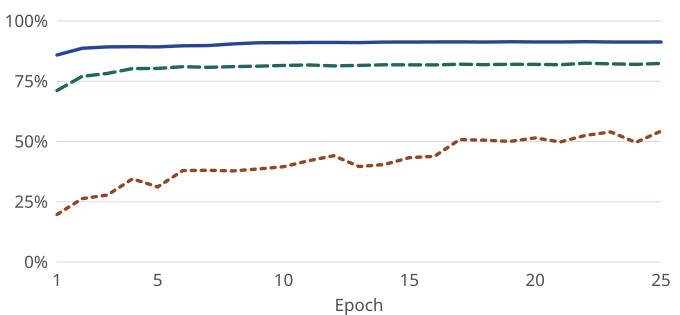
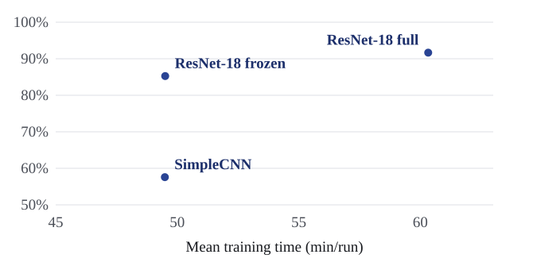
Training time includes validation. Inference timings come from report Table 14. The repository summary CSV records a different set of inference timings.
Comparison and discussion
- Accuracy and compute. Full fine-tuning gains 6.41 percentage points in test Macro-F1 over frozen ResNet-18 and takes about 10.8 more minutes per run. Both variants run the same backbone at inference.
- Per-class changes. Rice F1 rises from 43.00% to 92.39% with frozen ResNet-18. Egg gains another 12.07 points with full fine-tuning. Dairy product remains the lowest-recall class for the full model (80.50%).
- What the comparison measures. The gap from SimpleCNN combines architecture, capacity, initialization and training-policy differences.
Horizontal-flip ablation
Each comparison pairs runs by seed with all other settings fixed. Both ResNet-18 configurations gain Macro-F1 at all three seeds. SimpleCNN varies in direction, so the evidence for a benefit is inconclusive.
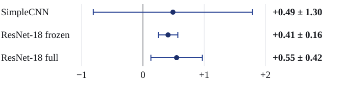
Change in test Macro-F1 from adding training-time flipping, in percentage points. Dots are paired means and whiskers show ± one sample standard deviation across three seeds.
Without flipping, mean test Macro-F1 was 57.09 ± 1.81% for SimpleCNN, 84.85 ± 0.11% for frozen ResNet-18 and 91.12 ± 0.05% for fully fine-tuned ResNet-18 (report Table 19).
Error analysis
242 of 2,770 test images were misclassified by full ResNet-18 at seed 42 (8.74%). Each error goes to the first applicable group from G1 to G5, based on its true and predicted labels. The remaining errors are listed as Other pairs. The images illustrate possible causes, and their captions show the predicted class’s softmax score.
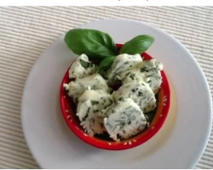
28 errors · 11.6%
Dairy product → Dessert (99.4%). Creamy textures may blur the boundary.
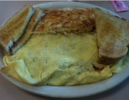
71 errors · 29.3%
Egg → Bread (100.0%). Mixed ingredients may offer competing cues.
37 errors · 15.3%
Fried food → Dessert (93.2%). Sweet fried foods fit both descriptions.
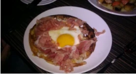
35 errors · 14.5%
Dessert → Egg (69.2%). The visible egg makes the annotation worth reviewing.
35 errors · 14.5%
Meat → Fried food (100.0%). A coating may obscure the ingredient.
Other pairs
errors · 14.9%
Review recurring pairs individually. The pictured cases suggest hypotheses for label review or dish-focused cropping.
Main confusion pairs
The counts below are for the main directions listed in report Table 18. Group totals can also include less frequent pairs.
| Group | True class → Predicted class (errors) | Proposed check |
|---|---|---|
| G1 | Dairy product → Dessert (17) Dessert → Dairy product (11) |
Review how mixed dairy dishes are labeled. Add dairy and visually similar dessert examples in varied settings. |
| G2 | Bread → Fried food (13) Egg → Bread (12) Bread → Egg (10) Bread → Meat (9) Dessert → Bread (7) |
Review how the main food is chosen. Compare full images with crops of the main dish to test the influence of fillings and sides. |
| G3 | Fried food → Dessert (11) Meat → Dessert (9) Seafood → Dessert (6) |
Review labels for sweet fried foods. Compare dish-focused crops and add visually similar examples from competing classes. |
| G4 | Dessert → Egg (9) Dessert → Meat (9) Dessert → Soup (6) Dessert → Seafood (5) |
Audit ambiguous labels and expand coverage of desserts that look like other classes. |
| G5 | Fried food → Meat (7) Meat → Fried food (4) Meat → Egg (4) |
Review which label takes priority when ingredient and preparation both apply. Add consistently labeled coated foods and mixed dishes. |
View all 20 examples from report Figures 21–25
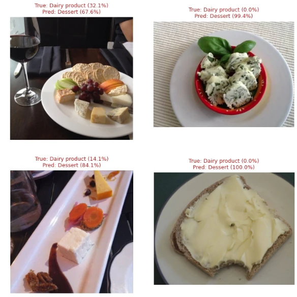
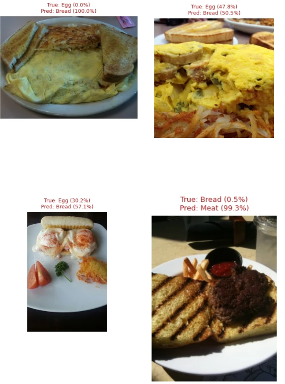
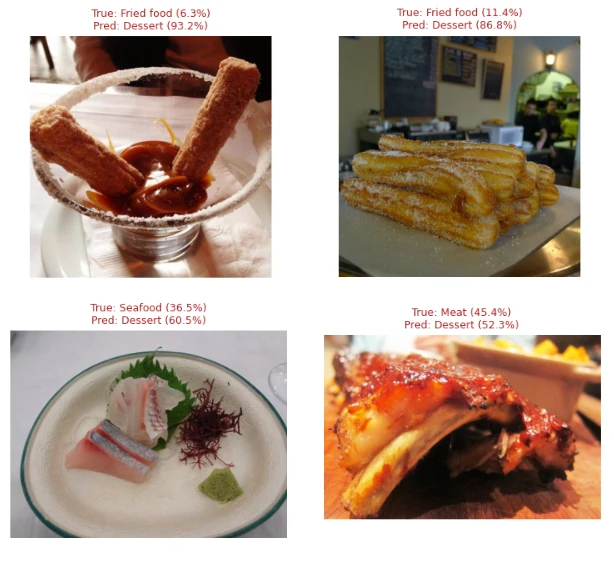
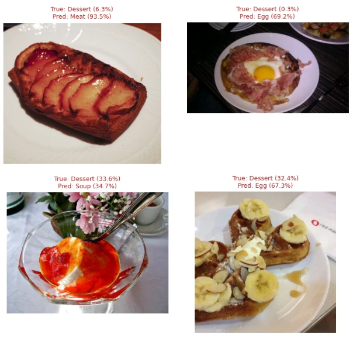
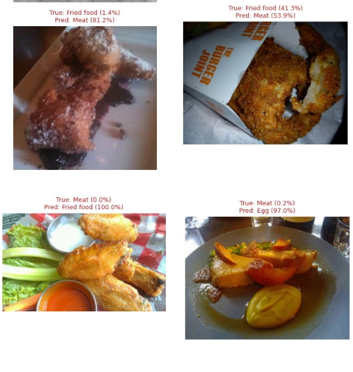
Errors with high softmax scores
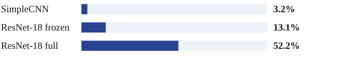
Full ResNet-18 averages 239 errors per seed, compared with 426 for the frozen variant and 1,097 for SimpleCNN. A larger share of the full model’s remaining errors has a high score.
In the G1 and G5 examples above, the predicted classes score 99.4% and 100.0%, while the true classes round to 0.0%. These cases motivate a calibration test across all predictions. The report proposes fitting temperature scaling on validation data and evaluating calibration on the test set.
Limitations and conclusion
Fully fine-tuned ResNet-18 with horizontal flipping leads on this Food-11 split.
It reaches 91.67% test Macro-F1 and outperforms the frozen backbone by 6.41 percentage points.
Limits and next steps
- One dataset split. Three seeds measure training variability on the same images. Smaller classes, such as Rice with 90 test images, are more sensitive to individual errors. Test on an independent food dataset.
- Different architectures. Compare pretrained and randomly initialized ResNet-18 under a matched setup to isolate pretraining.
- Ambiguous labels. Review Dairy product and Dessert pairs, and test whether cropping to the main dish helps.
- Training budget. SimpleCNN was still learning at epoch 25. More seeds would also help assess whether the small gains from flipping recur.
AI usage - this assignment
Assignment-specific AI Usage Disclosure
Where AI was used
- AI assisted with organizing the web report, condensing explanations and implementing the visual presentation.
Where AI was NOT used
- The group ran the experiments. The scores and figures come from the group’s report and experimental outputs.
Links
| Content | Link |
|---|---|
| Source code | GitHub repository |
| Three-seed experiment outputs | Logs, predictions and metric tables |
| Final report | Report PDF |
| Notebooks | EDA · Training (seed 42 copy) |